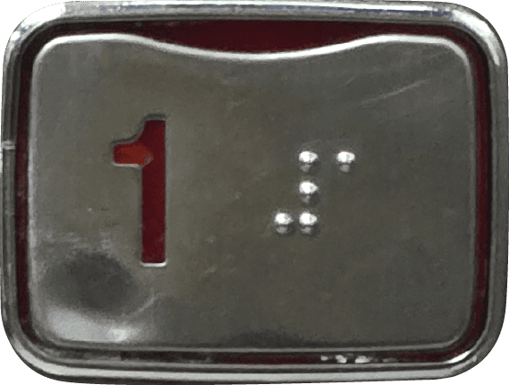
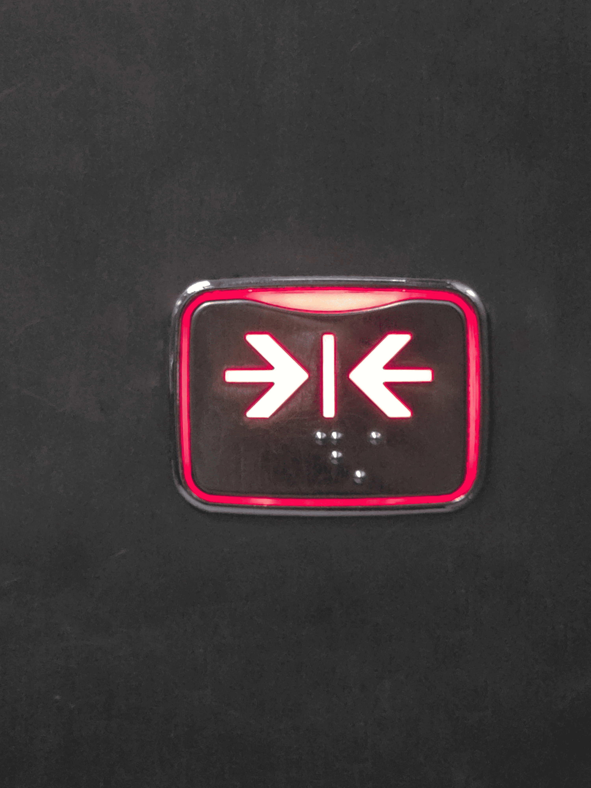

엘리베이터 버튼 색상은 왜 주황색이나 녹색인가?
이에 대한 규격은 부재하나, 다수의 엘리베이터에서 주황색 또는 녹색 버튼이 관습적으로 사용된다. 이는 가시성 확보 때문이다. 주황색(호박색, Amber)은 어두운 환경에서의 가시성이 높아 설계에 반영되었다. 이는 시력 일부를 보유한 저시력 시각장애인을 위한 설계 측면도 있다. 녹색은 관용적으로 OK 및 허용의 의미로 사용되며, 최근에는 현대적인 UI 트렌드에 따라 채택되는 경우가 많다. 특정 학교의 경우, 타 건물 버튼은 주황색이나 비교적 최근 건축된 기념관의 버튼만 녹색으로 확인된다.
엘리베이터 버튼은 몇 번까지 누를 수 있도록 설계되는가?
하루에 다수 회 눌리는 엘리베이터 버튼은 평균적으로 20만 회에서 50만 회의 작동 사이클을 견디도록 설계된다. 일부 제조사는 300만 회 이상을 견디도록 설정하기도 한다. 닫힘 버튼과 같이 사용 빈도가 높은 버튼은 일반 버튼보다 더 높은 내구성으로 설계된다. 그럼에도 불구하고 마모된 버튼은 쉽게 발견된다.
닫힘버튼을 누르는것은 전기낭비일까?
엘리베이터의 닫힘 버튼을 사용하는 행위는 실질적인 측면에서 큰 전기 낭비라고 판단되지 않는다. 엘리베이터 전력 소비의 대부분은 카를 수직으로 이동시키는 모터 구동에 집중된다. 문을 열고 닫는 도어 동작에 소모되는 전력은 전체 운행 전력에 비해 매우 미미한 수준이다. 닫힘 버튼의 기능은 문이 닫히도록 설정된 시간 지연을 단축하고, 문 닫힘을 지시하는 제어 시스템에 신호를 전달하는 것이다. 버튼을 눌러 문 닫힘 시간을 줄이더라도, 문을 닫는 데 필요한 전력량 자체는 큰 차이가 발생하지 않는다. 오히려 운행 사이클이 빨라져 다음 승객을 위한 대기 시간을 줄임으로써 간접적인 효율성을 높이는 측면도 있다. 따라서 닫힘 버튼을 누르는 행위는 문 닫힘 시간을 단축하는 기능만 수행할 뿐, 엘리베이터의 주요 에너지 소비 요소에 직접적인 영향을 미치지 않으므로, 닫힘 버튼 사용이 심각한 수준의 전기 낭비를 초래한다고 보기는 어렵다.